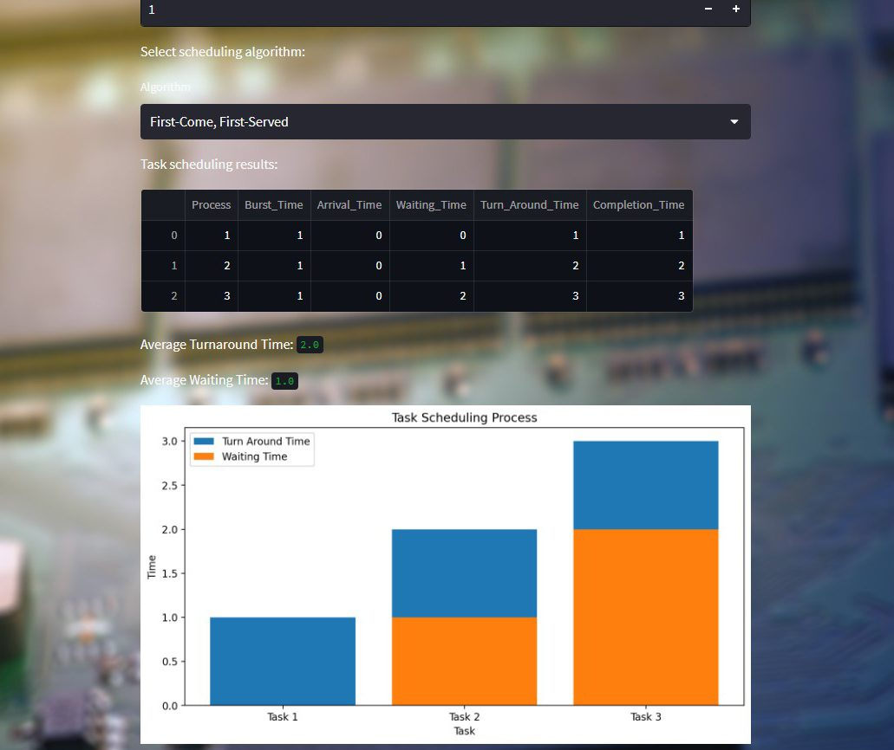

This project simulates three OS scheduling algorithms - First Come First Serve (FCFS), Priority, and Round Robin - to help computer science students and professionals understand how scheduling impacts system performance. Built with Streamlit, Pandas, and Matplotlib.

How It Works
Users input process details (number of tasks, arrival time, burst time, priority) then select an algorithm. The appropriate class simulates the scheduling process and returns a DataFrame with waiting time, turnaround time, and other metrics. A bar chart is generated to visualize the schedule.
- FCFS: Schedules tasks in arrival order.
- Priority: Executes higher-priority tasks first.
- Round Robin: Cycles through tasks in fixed time quanta.
Future Directions
Planned enhancements include additional scheduling algorithms (SJF, SRTF, MLQS), more granular simulation controls, and richer visualizations such as Gantt charts for in-depth performance analysis.
Try it Live